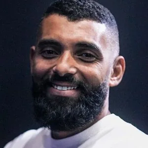
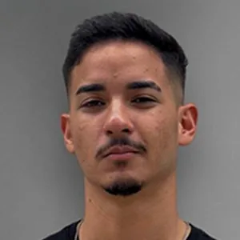
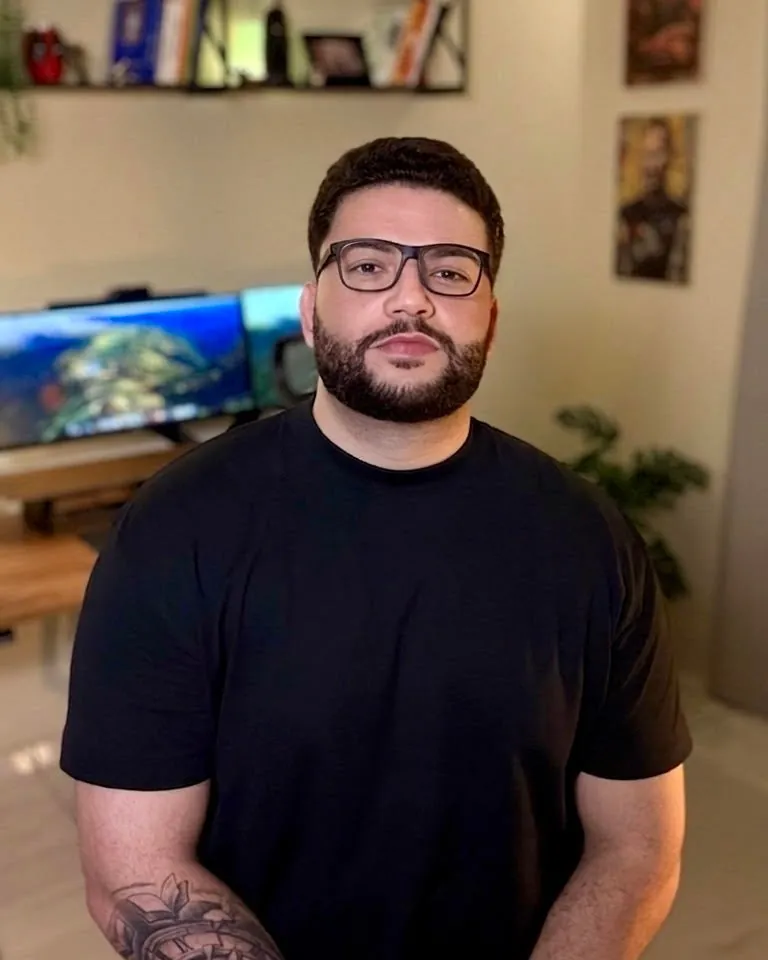

Posicionamento
Onde a sua empresa compete, contra quem e por que ela é a escolha certa para o cliente que você quer atrair.
Estratégia e design no mesmo projeto, para a sua marca valer o que a sua empresa entrega.

“Naturalmente o meu serviço subiu de nível, foi para outro patamar.”
“Quando as pessoas veem, a reação é instantânea: ‘Uau, eu quero!’”

“O resultado superou todas as expectativas.”
“O Edson conseguiu desenvolver algo surpreendente.”
“Ali eu percebi o cuidado que ele teve em interpretar o que passei.”
Os quatro têm a mesma origem: o mercado ainda não entendeu por que a sua empresa vale o que cobra.
No começo, quem vende é o dono: a reputação, o relacionamento, a indicação. Para passar desse ponto, o cliente precisa de um motivo claro para escolher, confiar e pagar o seu preço sem nunca ter falado com você. Esse motivo é a marca.
Indicação, relacionamento e a sua presença em cada negociação. Funciona até a sua agenda acabar.
Mais esforço, e o faturamento no mesmo lugar.
O cliente já chega sabendo quem você é, o que faz de diferente e quanto isso vale.
Para a marca trabalhar pelo seu negócio, o projeto trabalha três frentes, nessa ordem. A estratégia define o lugar, a comunicação dá o argumento e a identidade torna tudo isso visível.
Onde a sua empresa compete, contra quem e por que ela é a escolha certa para o cliente que você quer atrair.
O que a marca diz e como diz, com uma personalidade e um tom de voz que deixam claro o valor do que você vende.
Um sistema visual que traduz a estratégia e faz o cliente reconhecer a sua empresa em cada ponto de contato.
Primeiro a estratégia, depois a criação. Cada etapa termina numa entrega que você valida antes de seguir. O prazo varia com o escopo do projeto.
Conversa a fundo sobre o negócio, o público e a concorrência.
Sessão de trabalho e um resumo do que trava a percepção da marca.
Posicionamento e caminhos de look and feel para você validar.
O visual da marca e o jeito como ela fala, apresentados para validação.
A marca aplicada nos pontos de contato do seu negócio.
Guia de marca e arquivos organizados na plataforma.
Cada cliente recebe acesso, com usuário e senha, a uma plataforma feita para o projeto dele. Sem caçar arquivo no e-mail nem perguntar em que pé está.
O Edson me esclareceu muita coisa. Quando ele me trouxe o resultado, eu percebi que era exatamente o que eu precisava.
O projeto impressiona em cada detalhe, das cores à composição geral. Quando as pessoas veem, a reação é instantânea.
O profissionalismo do Edson se destacou desde o primeiro contato. O resultado superou todas as expectativas.
Na apresentação eu fiquei emocionado, o Edson conseguiu desenvolver algo surpreendente.
Ali eu percebi o cuidado que ele teve em interpretar da melhor forma possível as informações que passei.
Há 15 anos eu trabalho com empresas que precisavam de mais do que um visual bonito: sair da disputa por preço, ser percebidas como premium num mercado concorrido, lançar uma marca do zero ou parecer do tamanho que já tinham.
Já conduzi projetos de marca no Brasil, nos Estados Unidos, em Portugal e na Irlanda. Em todos, o trabalho começou pela mesma pergunta: qual problema do negócio essa marca precisa resolver?

As perguntas que todo empresário faz antes de fechar um projeto de marca, respondidas sem rodeio.
Faz mais sentido quando a empresa já vende com consistência e sente que a marca ficou para trás do que ela entrega. E vale fazer antes de investir mais em mídia, equipe ou expansão, porque cada real investido passa a construir a mesma marca. Se você ainda está validando o produto, a primeira conversa ajuda a ver isso com clareza.
Faz, e esse costuma ser o melhor momento. A marca é o que permite que a confiança que hoje está no seu nome passe para o negócio. Com ela definida, cada pessoa que entra para trabalhar com você já sabe como o negócio fala, se apresenta e atende.
Depende do escopo do projeto. Já na primeira conversa eu falo o valor, para você decidir com clareza.
Na maioria das vezes, o trabalho começou pelo visual. Aqui o visual vem depois da estratégia: ele só nasce quando o negócio, o público e a concorrência estão claros. Por isso cada elemento do sistema visual tem uma razão ligada à estratégia, e a sua equipe consegue aplicar a marca com consistência.
Entre 4 e 6 semanas, dependendo do escopo, da imersão aos arquivos finais. Tudo acontece online, então atendo empresas no Brasil e fora dele.
Você participa dos momentos que definem a marca: a imersão, o diagnóstico e a apresentação de cada etapa. É ali que a sua visão do negócio entra no projeto. O resto do trabalho fica comigo.
O trabalho não é guiado por gosto, mas é importante que você termine o projeto satisfeito com a entrega. Cada solução nasce da necessidade do seu negócio e da estratégia que você aprovou. Por isso cada etapa termina numa apresentação que você valida, e os ajustes acontecem ali, antes de seguir.
Quem decide sobre a marca, normalmente o dono da empresa. Com poucas pessoas na mesa, as decisões saem rápido e o projeto cabe em poucas semanas.
Não necessariamente. A estratégia mostra o que está funcionando e o que está atrapalhando. Às vezes a empresa precisa de uma identidade nova, às vezes de um ajuste e de uma direção clara para o que já existe.
Dá, e é nesses mercados que a marca mais faz diferença. Quando os produtos se parecem, o cliente decide pela confiança, pela identificação e pela percepção de valor. É isso que o posicionamento organiza.
Fica melhor para os dois lados. A agência ganha um norte claro sobre o que dizer, para quem e com qual argumento, e as campanhas passam a ter mais consistência e a construir a mesma marca.
O guia de marca e todos os arquivos finais, organizados na plataforma do cliente, para a sua equipe, a sua agência e os seus fornecedores aplicarem a marca do mesmo jeito.
Conte em poucos minutos o momento da sua empresa. Eu leio cada aplicação antes da primeira conversa.
Um formulário curto sobre a empresa e o momento dela.
Uma call para entender o negócio e ver se faz sentido.
Escopo, prazo e valor definidos antes de começar.